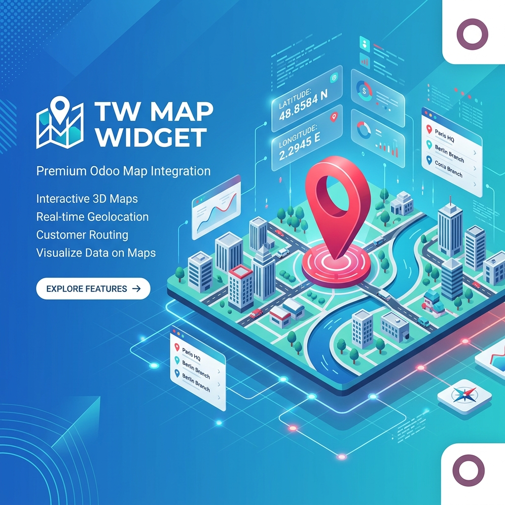

Premium Interactive Maps Integration for Odoo 18

A fully responsive, modern OWL component that provides seamless map interactions directly in your Odoo forms.
Easily switch between OpenStreetMap (Leaflet) and Google Maps API seamlessly based on your system parameters.
Drag a pin to update coordinates, or manually type coordinates to move the pin. Real-time data binding built-in.
Fully supports readonly="1". Locks the map pin in place while keeping the map visually interactive for panning and zooming.
Automatically resolves addresses. Dragging the pin will automatically populate the associated address fields.
Works flawlessly on mobile and tablet devices, offering a native touch-friendly experience across the board.
JSON field to your Python model to store map data.widget="tw_map" on your field.options="{'lat_field': 'your_lat_field', 'long_field': 'your_long_field', 'address_field': 'your_street'}" to sync the map pin with specific fields.readonly="1" to disable drag-and-drop map manipulation, perfect for approved or locked records.Our team is ready to assist you in integrating or customizing the TW Map Widget for your unique business needs.
Contact Us